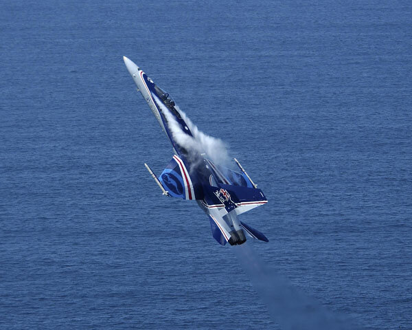

AS9100D Certified Division
Flight-critical components for
Australia's aerospace industry
Nupress machines structural airframe components, engine assemblies, and flight-critical hardware to AS9100D. We support Australia's most demanding defence and aerospace programs with proven 5-axis CNC capability and full material traceability.
What We Deliver
Aerospace-grade precision
from a specialist team
Our aerospace division combines advanced 5-axis CNC machining with rigorous quality management to produce components that meet the exacting requirements of Australian and international aerospace programs.
-
5-axis CNC Machining Complex structural and contoured components in a single setup
-
Structural Airframe Components Spars, ribs, frames, brackets, and longerons in aluminium and titanium
-
Engine & Propulsion Hardware High-temperature alloy components for engine assemblies
-
Avionics & Instrument Housings Precision-machined enclosures and mounting structures
-
Full Material Traceability Mill certificates, heat treatment records, and inspection reports supplied
-
CMM Inspection & First Article Hexagon Metrology CMM inspection. FAI reports to AS9102 available on request

Technical Data
Aerospace Specifications
| Specification | Detail |
|---|---|
| Quality System | AS9100D Rev D, ISO 9001:2015 |
| Standard Tolerance | ±0.005mm linear; ±0.01mm angular |
| Achievable Tolerance | ±0.003mm with enhanced inspection protocol |
| Aluminium Alloys | 7075-T6, 7075-T651, 2024-T4, 6061-T6, 6082 |
| Titanium Alloys | Ti-6Al-4V (Grade 5), Ti-6Al-4V ELI (Grade 23) |
| High-Temp Alloys | Inconel 718, Inconel 625, Waspaloy |
| Stainless Steels | 316L, 17-4PH, 15-5PH |
| Surface Finishes | Anodise (Type II & III), alodine, primer, passivation |
| Inspection | Hexagon Metrology CMM (×2), optical measurement, surface profilometry |
| Documentation | FAI (AS9102), CoC, material traceability, inspection reports |
| Max Part Size | Subject to machine envelope — contact for specifics |
| Programs | Defence prime contractor programs and military aerospace platforms |
Integrex IGX Cell
Complex parts.
Single-setup machining.
Our Mazak Integrex IGX cell delivers complete parts in a single setup — combining multi-axis turning and milling for complex aerospace components with full traceability.
Ready to submit an aerospace RFQ?
Our team responds within 3 business days. AS9100D First Article available.